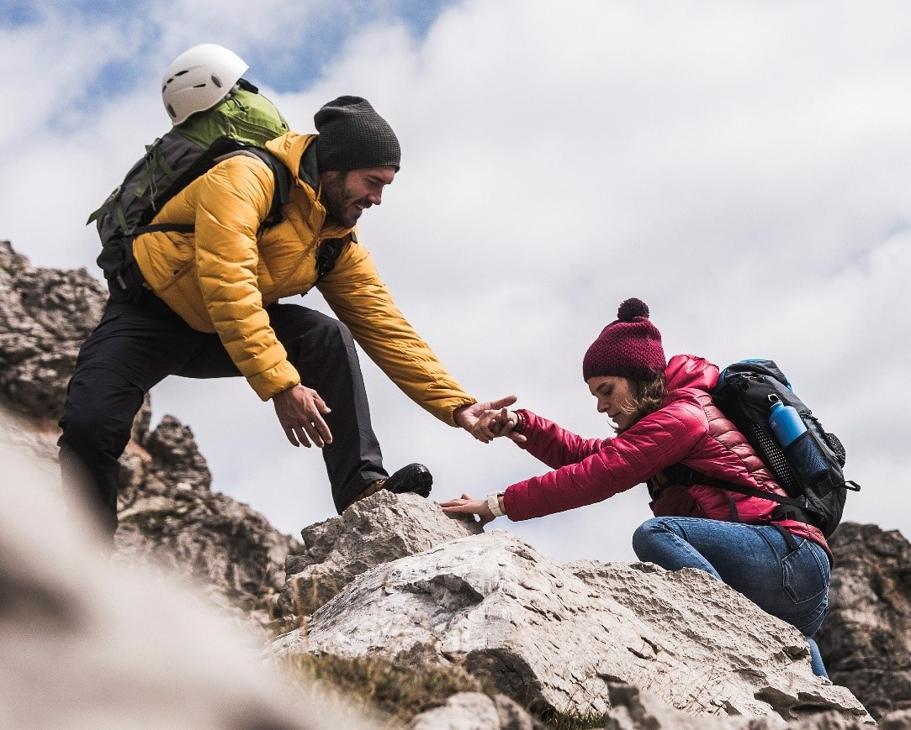
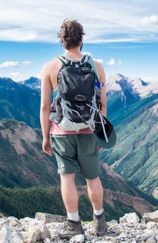

Hiking Tips
1. Start on an easy trail and pace yourself. Make sure you are hiking an easier trail than distance you can normally walk on level ground. Go for a little shorter distance and see how you feel with elevation issues.
 Take your time to enjoy the scenery. Work up to the harder trails. Estimate time required to hike trail figure 2-miles per hour then add an extra hour for every 1000 feet gain of elevation.
2. Check the weather an hour before starting. Better yet check weather days before to be prepared. And change plans if weather is bad rather than be surprised on the trail.
3. Tell someone where you will be. File hike report with ranger before starting. Let them know exactly where you are going and when you expect to be done. Then call them when you safely home. If you make someone worry because your several hours late it is on you. Allow time for slow hiking, amazing views or sore ankle to cause delays.
 4. Pack essentials Navigation (map & compass) ● Sun protection (sunglasses & sunscreen) ● Insulation (extra clothing) ● Illumination (headlamp/flashlight) ● First-aid supplies ● Fire (waterproof matches/lighter/candle) ● Repair kit and tools ● Nutrition (extra food) ● Hydration (extra water) ● Emergency shelter (tent/plastic tube tent/garbage bag).
4. Pack essentials Navigation (map & compass) ● Sun protection (sunglasses & sunscreen) ● Insulation (extra clothing) ● Illumination (headlamp/flashlight) ● First-aid supplies ● Fire (waterproof matches/lighter/candle) ● Repair kit and tools ● Nutrition (extra food) ● Hydration (extra water) ● Emergency shelter (tent/plastic tube tent/garbage bag).
5. Wear proper shoes and socks. Nothing makes a hike miserable than the wrong shoes.
Flipflops or boots with no traction will not work. Also heavy work boots will tire you. Do not wear cotton socks they hold moisture and cause blistering. Use wool or synthetic socks.
6. Wear clothes that function well for hiking. No jeans in hot weather. Go synthetic moisture repelling clothing and stay away from cotton. Use wool instead. Stay dry and bring bandages for blisters.

7. Drink water Stay away from alcohol and caffeine. Carry at least 32 ounces of water.
8. Bring concentrated snacks trail mix, peanut butter sandwich, protein bars, jerky. Something packable that can survive the trip without refrigeration.
9. Pace yourself. You might be very energetic in the beginning of the hike remember you have to walk back.
10. Leave no trace. Minimize campfire potential damage by putting out fires correctly. Leave what you find so others can see it also. Treat the trails with respect. Dispose of waste properly. Respect the wildlife through quiet observation. and be considerate of others. Which means no excessive noise, uncontrolled pets or damage your surrounding by making your mark on rocks or trees.